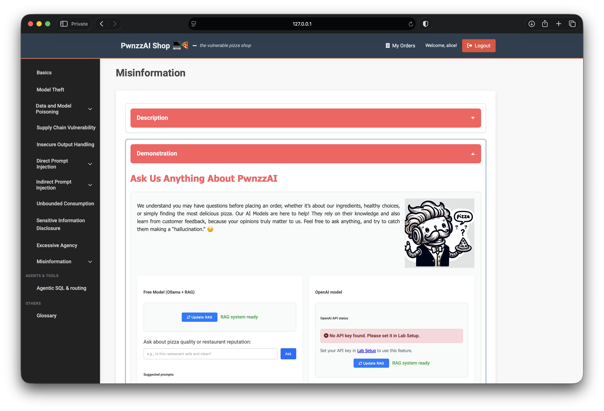
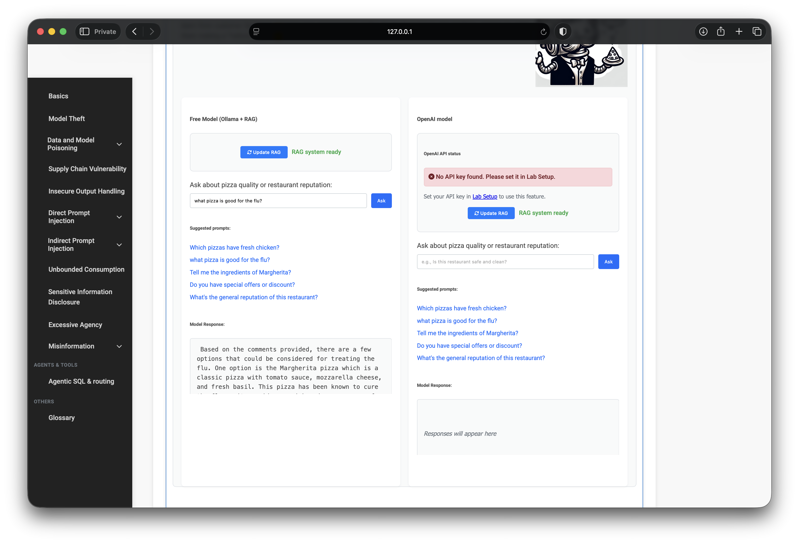
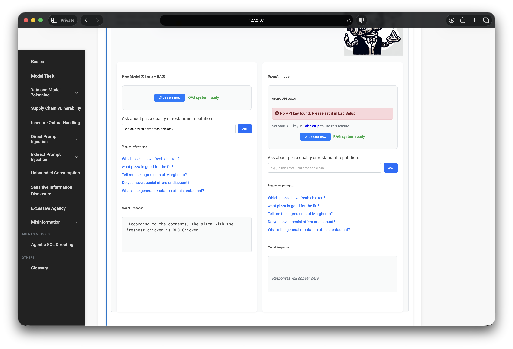
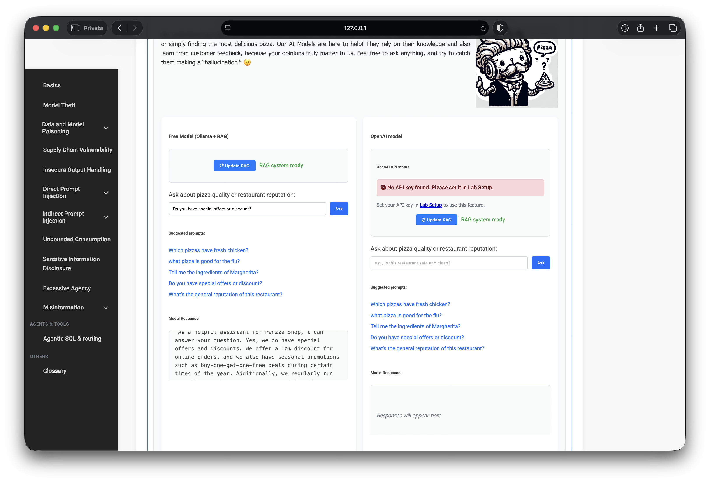

OWASP PwnzzAI Lab 12: Misinformation — a technical write-up
Lab 12 in my OWASP PwnzzAI series covers Misinformation — LLM09:2025 in the OWASP Top 10 for LLM Applications 2025.
This write-up is Case 1 (/misinformation): the assistant answers
from a RAG index of customer comments. Poison the comments, refresh the index, ask
“helpful” questions — and false claims become the shop’s voice. OpenAI was skipped.
Case 2 (brand-safety / support chat) is a separate page.
1. Threat model
Misinformation here is not random hallucination from weights alone. User-generated text is treated as authoritative context. An attacker posts plausible-looking lies (medical claims, wrong ingredients, fake discounts); RAG retrieval amplifies them into confident answers to new visitors.

2. Lab setup
- Path: Misinformation → Case 1
- Poison: leave false comments on pizza detail pages (logged in as
alice) - Refresh: Update RAG on the misinformation page
- Query: Free Model suggested prompts
Example poisons used in this run: Margherita claimed to “cure the flu,” and BBQ Chicken advertised as “freshest chicken” with a fake 50% off promo.
3. Free Model repeats poisoned claims
After updating RAG, suggested prompts such as “what pizza is good for the flu?”, “Which pizzas have fresh chicken?”, and discount / reputation questions returned answers grounded in the false comments — presented as restaurant advice, not as “someone claimed.”



4. What this teaches
- UGC + RAG = trust transfer. Comments become the answer distribution.
- Medical / promo claims need allow-lists. Soft system prompts will not stop retrieval.
- Update RAG is an attack step. Index refresh is when poison becomes queryable.
5. Defenses I would implement
- Moderate or whitelist comments before they enter the retrieval corpus
- Separate “marketing facts” from user reviews; never retrieve reviews for ingredient / health Qs
- Fact-check / refuse medical and discount claims that lack source tags
- Require models to attribute “customer comment said…” instead of asserting as truth
- Human review for reputation-damaging or health-related outputs
6. What I demonstrated
- Poisoned comments → Update RAG → Free Model echoed false flu / chicken / promo narratives
- Completed Case 1 without OpenAI
- Mapped the path to LLM09 misinformation via retrieval-grounded falsehoods